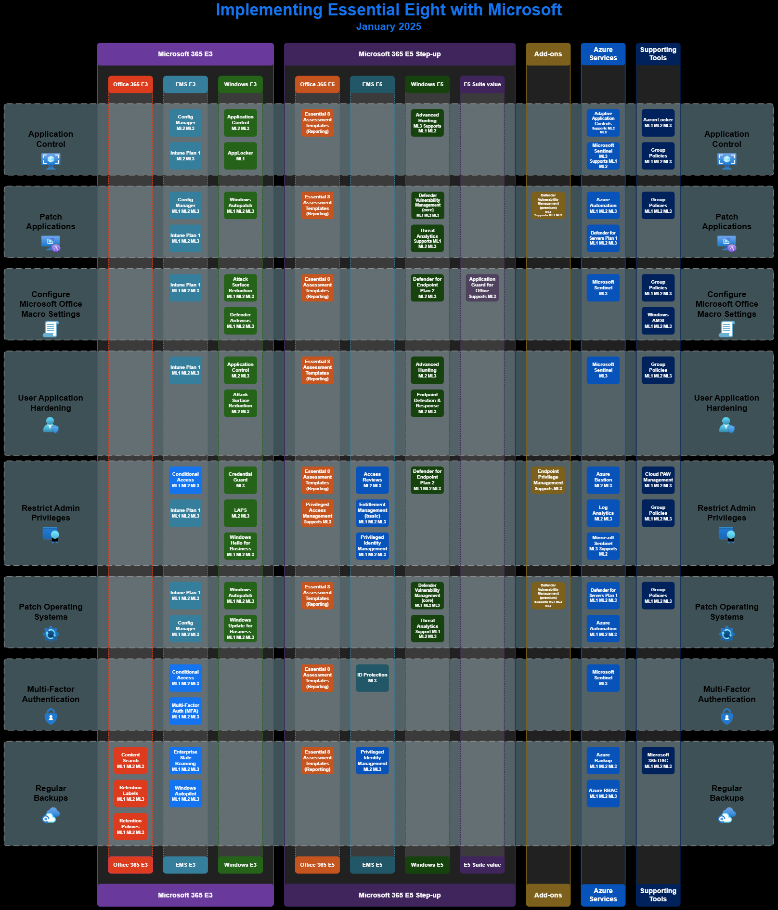

10. ACSC Essential 8
Summary The Australian Signals Directorate (ASD) has developed prioritised mitigation strategies, in the form of the Strategies to Mitigate Cyber Security Incidents, to help organisations protect themselves against various cyber threats. The most effective of these mitigation strategies are the Essential Eight. The Essential Eight has been designed to protect organisations’ internet-connected information technology networks. While the principles behind the Essential Eight may be applied to enterprise mobility and operational technology networks, it was not designed for such purposes and alternative mitigation strategies may be more appropriate to defend against unique cyber threats to these environments.
The Essential Eight Maturity Model, first published in June 2017 and updated regularly, supports the implementation of the Essential Eight. It is based on ASD’s experience in producing cyber threat intelligence, responding to cyber security incidents, conducting penetration testing and assisting organisations to implement the Essential Eight.
Please start with this Workbook- ACSC Essential 8 – Health Report in Microsoft Sentinel
-
Licencing required to implment Essential 8 with Microsoft tooling 
{kind=link}
Microsoft E8 Guides Microsoft has a list of guides - focusing on each of the 8 Mitigation Strategies
Hardening Guidance from ACSC
Helpful Info/Links for each mitigation strategy
Application Hardening
Notes
Links
- Ad Block Tester - This is reccomended by ACSC to test your ability to block ads. With the Manifest v3 changes, a combination of Browser Extensions and DNS blocking is required.
Application Control
Notes
-
Applocker is required for E8 to control the execution of scripts in user profiles
-
App Control for Business/Applocker only reports failure events to Advanced Hunting, Successful events are not logged. This can make it hard to find if a policy is working or not as you are looking for something that isn't there
-
App Control for Business's Intelligent Security Graph is incompatible with Essential 8
-
Microsoft isn't the only company that does App Control, If App Control for Business + AppLocker is to difficult to manage (It is a complicated/frustrating process, especially to start, even more so if you don't have your apps package). Airlock and ThreatLocker are great alternatives
Links
-
Deploy AppLocker via Intune - Good guide on how to deploy Applocker policies via Intune
-
App Control for Business - 1 2 - Good doco on how App Control for Business works as well as deploying via Intune
-
Querying App Control events centrally using Advanced hunting - Shows what the Action Types mean
- App Control for Business Events = AppControlCodeIntegrity XYZ
- AppLocker Events = AppControl XYZ
-
KQL for App Control Wizard - This Advanced Hunting query will get you the information you need for the App Control Wizard
Multi-factor authentication
Notes
Links
Patch Applications
Notes
Links
Patch Operating Systems
Notes
Links
Restrict administrative privileges
Notes
Links
-
Sean Metcalf's blog - is arguably the best source of information on securing AD
-
Sean Metcalf talk and Slides on how Entra Tenants are compromised
-
Configure a Jumphost with ZTNA - Good blog post on using PIM/Global Secure Access to secure a Jumphost
-
AD Tiering Powershell Scripts/BSides talk - PS Scripts and PDF on how to tier AD
Regular backups
Notes
Links
Restrict Microsoft Office macros
Notes
Links
- ACSC's guide to disabling Macros - Very good guide - Shows 6 different ways to set macro's, Along with the benefits/fritction. All these options can be set in Intune/GPO
- Powershell Testing Scripts - Scripts that you can run to confirm what settings are enabled are disabled, Easily customisable to whatever settings you want to test